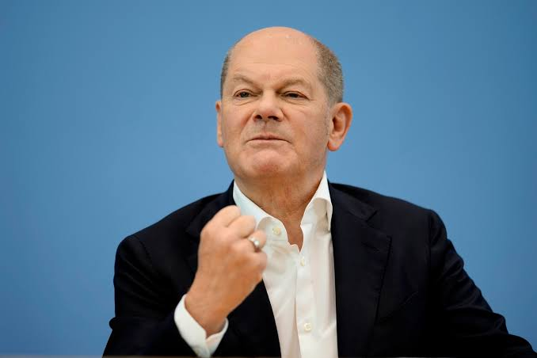

Infrastructure & Education
A capital city cannot function on outdated networks. We are fighting for an aggressive modernization bill that targets our transit corridors and digital grids. Furthermore, our schools must be sanctuaries of innovation.

Oplana chose progress. Now, we secure the foundation. Adam Scholz is running for re-election to ensure our constituency becomes the benchmark for infrastructure, justice, and safety.
First elected as Oplana's Member of Parliament in 2056, Adam Scholz has been a relentless advocate for our city through the 2060 and 2064 terms. Now, looking toward 2068, his commitment remains unshaken.
Serving as both the Shadow Minister of Justice and the Shadow Minister of Energy and National Resources, Adam has held the government accountable on both the rule of law and the sustainable future of our infrastructure. He understands the levers of power and how to pull them for Oplana.
Over a decade of unbroken service to the residents of Oplana, prioritizing transparency over politics.
Fiercely defending civil liberties and demanding fair taxation across all brackets as Shadow Minister of Justice.
Championing the modernization of our grid and environmental protections as Shadow Minister of Energy.
A capital city cannot function on outdated networks. We are fighting for an aggressive modernization bill that targets our transit corridors and digital grids. Furthermore, our schools must be sanctuaries of innovation.
Progress means nobody is left behind. We are pushing for an expansion of the social safety net, targeting poverty at its root. This includes expanded mental health services and rigorous protections for marginalized residents.
True security is born from strong communities, not just enforcement. We are advocating for community-led safety programs, better lighting in public spaces, and resources allocated toward neighborhood intervention.
"Adam doesn't just talk. He drafts the legislation, forces the vote, and makes the government answer to Oplana."- Oplana Workers Union
Election Day: December 5th, 2068
Polling Locations: All major Oplana district community centers and the Central Library.
Make your voice heard. Ensure your registration is up to date.
We built this together. Let's finish the job.
Volunteer Now